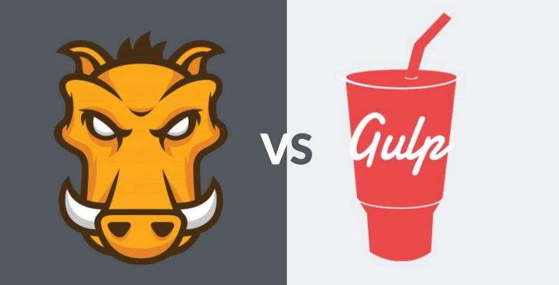
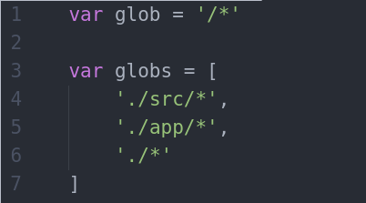
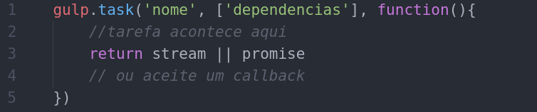
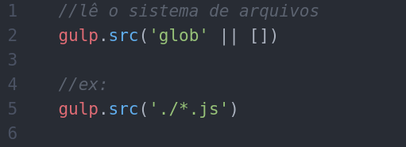
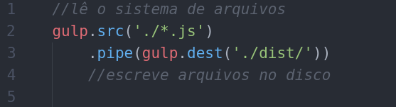

Automatizando seu workflow de desenvolvimento web com Gulp.js
Com Adilson Schmitt Junior
@sirgallifrey

Por que usar o node como ferramenta de desenvolvimento web?
"Node.js é algo que nós usamos no servidor, por que usar ele como ferramenta de desenvolvimento?"
Node.js
"Node.js® is a JavaScript runtime built on Chrome's V8 JavaScript engine"
O que é Gulp.js?

O que é Gulp.js?
- Automação
- Independente de plataforma
- Ecossistema sólido
- Simples
Automação
Gulp é um kit de ferramentas que ajuda você a automatizar tarefas dolorosas e demoradas no seu workflow de desenvolvimento. Tudo isso em javascript.
Independente de plataforma
Pessoas estão usando o gulp com PHP, .NET, Node.js, Java e outras plataformas.
Ecossistema sólido
Use módulos do npm para fazer tudo o que você quiser. Conta com mais de 2000 plugins curados para transformações de streams de arquivos
Simples
Disponibiliza uma API mínima, o que o torna fácil de aprender e fácil de usar.
Gulp vs Grunt
Gulp api
- task
- src
- dest
- watch
globs primeiro....
gulp.task
gulp.src
gulp.dest
Instalando node.js
#ubuntu
curl -sL https://deb.nodesource.com/setup_6.x | sudo -E bash -
sudo apt-get install -y nodejs
#arch
sudo pacman -S nodejs npm
Instalando gulp.js global
npm install -g gulp-cli
Iniciando o Projeto
cd caminho/do/prrojeto
npm init
npm install --save-dev gulp
#instalar tambem os plugins desejados
npm install --save-dev rimraf gulp-uglify gulp-concat gulp-sass browser-sync
#etc...